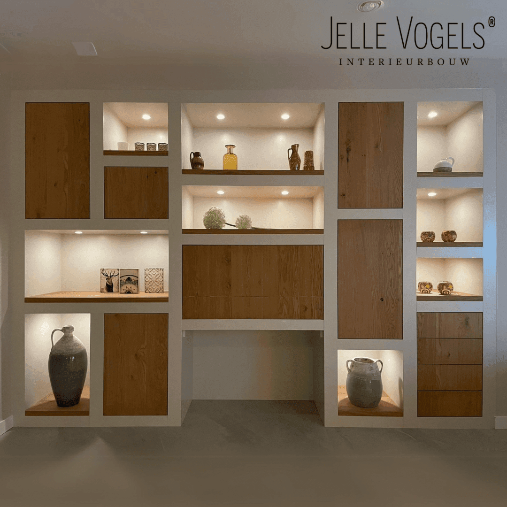
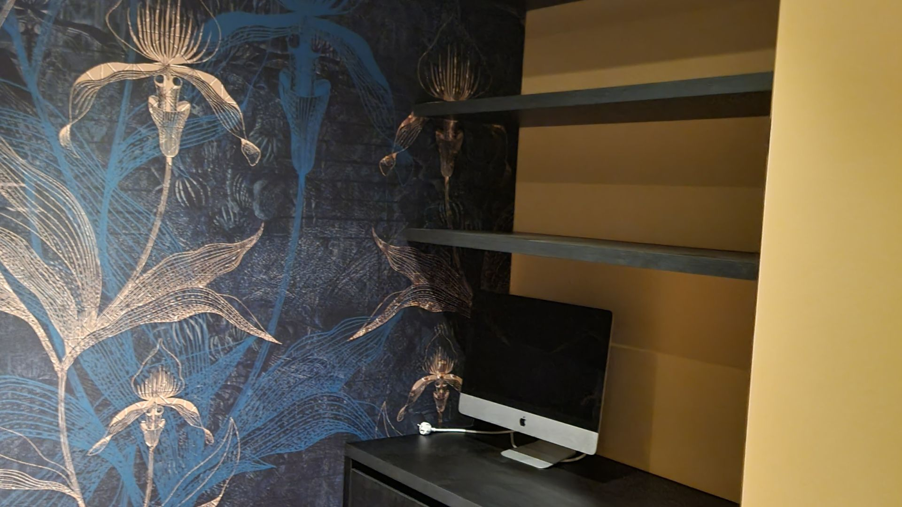

Keukens
Op maat ontworpen keukens en kookeilanden.
Samen bespreken we de mogelijkheden en maken we keuzes in hout, kleur, materiaal en uitstraling — voor zowel particulier als zakelijk.
Standaard ontvang je een 3D tekening met de bijhorende kleuren en materialen van het maatwerkmeubel of de keuken, zodat elk detail klopt.
In onze eigen werkplaats in Erp zagen en bouwen we alles op maat en plaatsen we het project met zorg bij jou op locatie.
Jelle Vogels Interieurbouw maakt jouw unieke droomkast-meubel of keuken. Ik neem de tijd en kom met een uniek ontwerp. Samen bespreken we de mogelijkheden en maken we keuzes in hout, kleur, materiaal en uitstraling. Hieronder vind je een kleine greep uit de gerealiseerde projecten.
Op maat ontworpen keukens en kookeilanden.

Inloopkasten, schuifwanden, bijkeukens en kastenwanden.

Wandmeubels, tv-meubels, thuiswerkplekken en buitenmeubels.
Bezoek onze werkplaats aan de Kempkensweg 9 in Erp (alleen op afspraak) om materialen, stalen en 3D-ontwerpen samen te bekijken.
